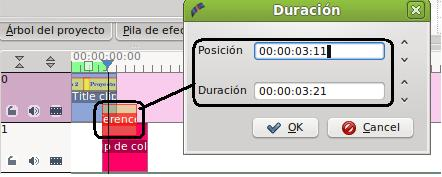
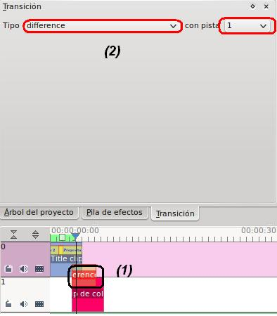
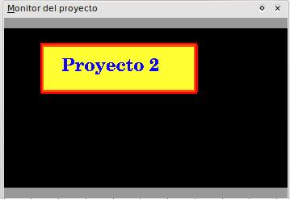
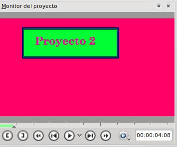

C. Aplicar Transaciones a nuestro Proyecto
1. Desplaza los diversos clips (excepto el de sonido) para que unos se monten sobre otros en la reproducción. La idea es que no estén alineadas las pistas, sino que se inicie la inferior antes de terminar la superior.
- En este caso lo hacemos con el clip de color, el clip de título y los tres cortes de nuestro clip de video
3. Modificaremos los valores de nuestra transición. Haz clic en la zona inferior del clip que has añadido la transición y te puede mostrar dos cosas:
| Duración de la transición |
|

Puedes modificar el tiempo de duración de la transición y la posición en la línea de tiempo. |
| Pestaña de Transición |
|

|
- Haz clic en (1) para que se abra las propiedades de la transición en la zona superior como te muestra la imagen anterior. Le indicamos la transición que vamos a utilizar y con cual de las pistas la vamos aplicar. En el caso anterior, el clip de título (pista cero) lo queremos mezclar con la pista 1 (clip de color).
- El resultado será el siguiente:
| Línea de Tiempo sin Transición | Aplicada la transición de Diferencia |
|  |  |
4. Agrega una transición entre la pista 1 (clip de color) y la pista 3 (clip de video y que contiene un efecto de carboncillo). botón derecho / añadir transición / divide. Indica que deseas la división con la pista 3. Obviamente, debes tener activa la pista 1 para añadir la transición. El resultado será que el carboncillo tendrá las lineas rojizas.
5. Guardamos este proyecto como proyecto2_3.
6. Generamos un fichero con las características del apartado A y observaremos nuestro nuevo video final con efectos y transaciones.
Este video muestra las diversas transaciones que nos podemos encontrar en Kdenlive y su finalidad. En temas posteriores se mostrarán y explicarán con más detalle al tema actual.
Jo.R.C.A. 2004 - 2011

Edición de Audio y Video con Software Libre by José Ramón Cerdeira Alonso is licensed under a Creative Commons Reconocimiento-No comercial-Compartir bajo la misma licencia 3.0 España License